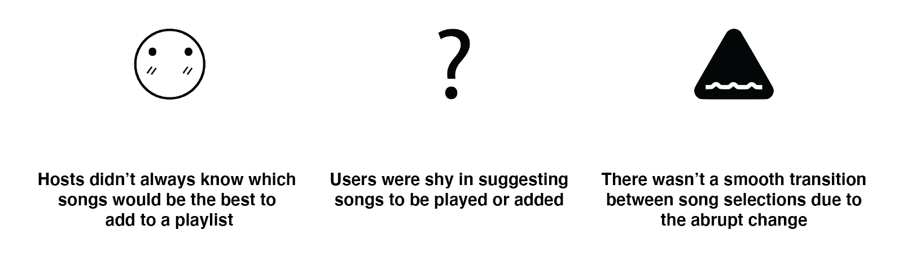

Problem: There is no cohesive system in place that avoids the conflict of matching the song suggestion to the overall music preference of the crowd in an interactive way.
Solution: Onbeat is an application that can be accessed anywhere, that connects users to their favorite streaming platform and allows them to suggest a song while voting for them through a democratized method.
My Contribution: As this was a solo project of interaction design course, I conducted all the research & design activities.
To get an overview with people’s experience, I investigated the needs of users and identifying their pain points. I conducted a total of 10 informal interviews with students from the University of Michigan. It turned out that their frustrations stemmed from three aspects:

I analyzed multiple existing crowdsourcing playlist platforms, both physical and digital, including Flo Music, OutLoud Social Jukebox, and Playify, to explore the current solution space users can utilize to suggest songs in a social setting. I discovered three main gaps that led to users’ frustrations.
I created multiple and an anti-persona based on the initial research and testing with sketches. The personas represent users’ goals and pain points that helped me to prioritize different user needs to guide the converging phase of my design process.
Based on the findings, I brainstormed for several solutions to tackle the users’ needs, and then expanded the sketches into scenarios that captured users’ pain points, emotion and interactions with each solution.
Along the research phase, I constantly held short user interviews with the artifacts at hand to validate the design concept. This phase also defied some of the assumptions I had in the brainstorming phase. Synthesizing the findings, I decided the overarching design rationale for the following design process.
Based on the design rationale, I developed multiple wireframes with different task flows. I then evaluated and landed on the final flow by conducting Questions-Options-Criteria analysis and collecting user feedbacks. The QOC analysis for several design questions helps me evaluate the trade-offs between different options
Testing with users along the design process enables me to identify spaces for improvement and refine my design for better usability and experience that caters to users’ needs. Some examples include:
- Design Change 1 - Changing upvote icon: Users were confusing the heart icon for liking the song instead of voting for it.
- Design Change 2 - Changing wording of downvote: Users thought that reporting the song meant it abused the playlist guidelines, and not downvoting
I then created hi-fi digital prototype with Adobe XD to yield more realistic experience. From high-level features to granular design elements, I tested and refined the design iteratively to achieve a final design that is easy-to-use and caters to the needs of the target users.
Onbeat uncovers the gaps of existing services that frustrate the target users and provides them a platform that caters to their needs Onbeat engages music lovers beyond of their personal network and opens up opportunities to express their music passion and taste.
I am my own users, but I am not like my users. My design problem stemmed from my personal experience and frustration. With users participating along my design process, I have gained more comprehensive understanding of different factors surrounding the problem to reduce my design bias. I also found the iterative approach extremely critical to my design, and prototyping rapidly played a role in the process. Getting feedback from real users helped me to validate the hypothesis and refine my design at all levels.
Thank you for taking the time to read through this case study! As a token of my appreciation, here's a little reward :)